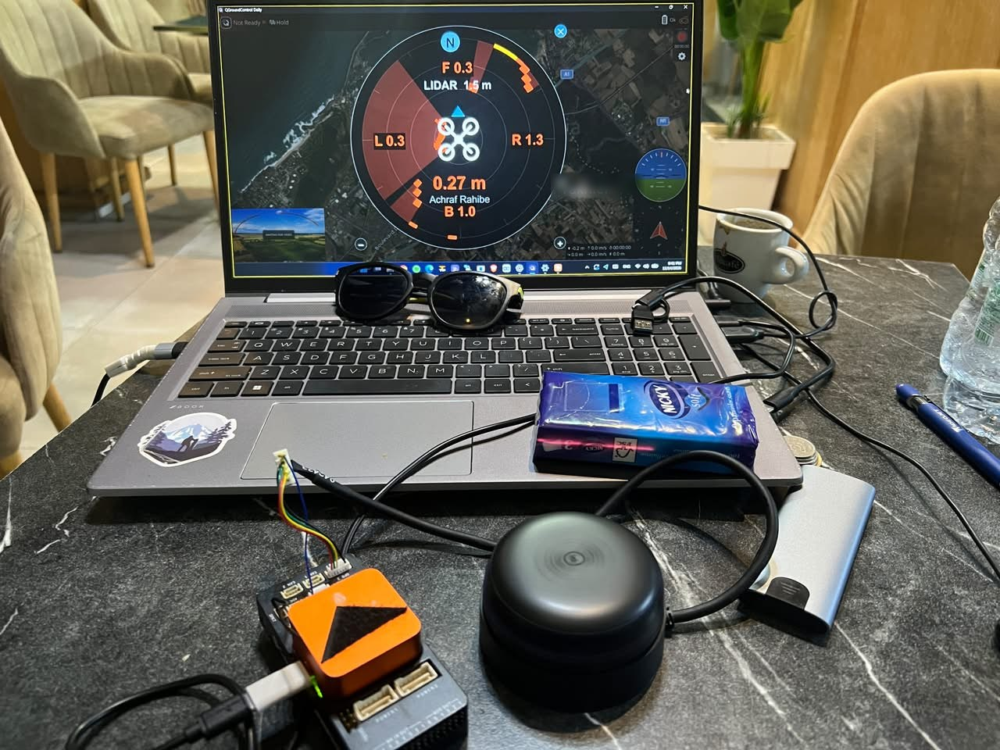
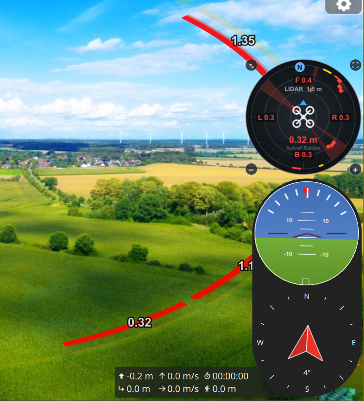
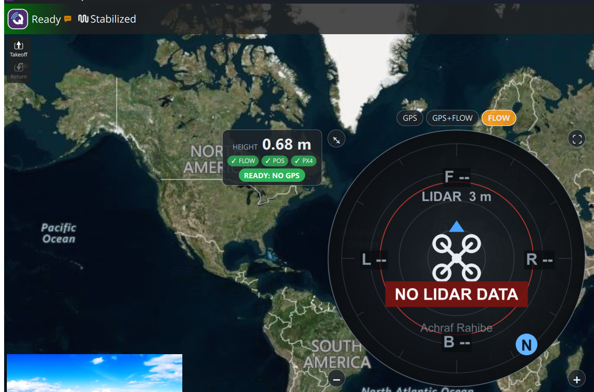
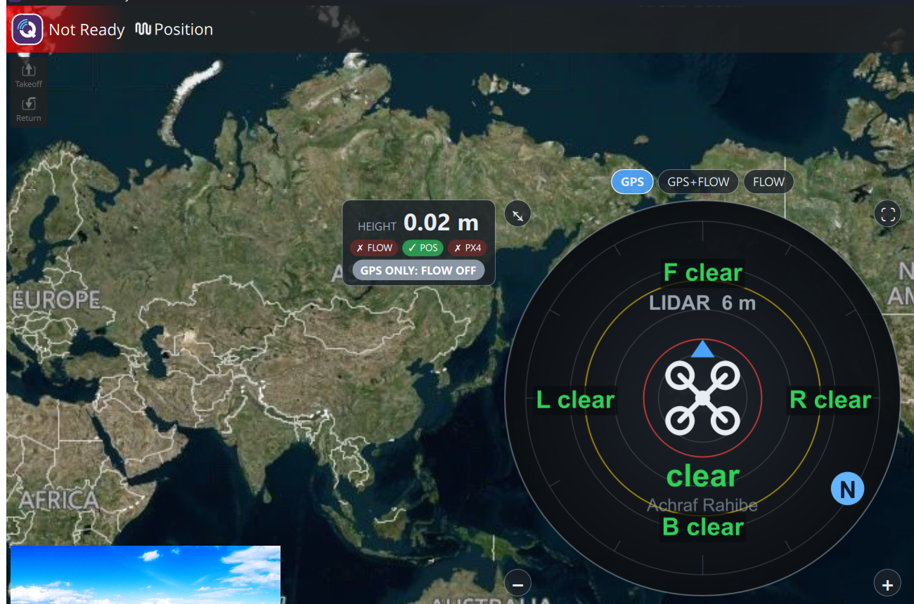

The goal
Give a multirotor 360 degree obstacle awareness from a Slamtec RPLidar A2M12 wired straight to the flight controller, with no companion computer, on both ArduPilot and PX4, and make the scan visible to the pilot. Two flight controllers are used: a Holybro Pixhawk 6X and a CubePilot Cube Orange Plus. This page is the single, running record of the work and is updated after every step until the flight tests.
Status today: the lidar works on both boards on the bench, under PX4 with a new driver and under ArduPilot with its native support. Nothing has flown yet.
Watch the project
The hardware
The RPLidar A2M12 is a 360 degree laser scanner (0.2 to 12 m) with a 3.3 V UART at 256000 baud. Its connector has five wires: red 5 V, yellow TX, green RX, black ground and blue MOTOCTL. It needs 4.9 to 5.2 V, about 450 to 600 mA when running and up to 1.5 A at start-up. Its front (0 degrees) is the side opposite the cable, and angles increase clockwise seen from above.
Wiring to TELEM2 (JST-GH, pin 1 is 5 V): yellow (lidar TX) to pin 3 (RX), green (lidar RX) to pin 2 (TX), black to pin 6 (ground). For the bench, red went to TELEM2 pin 1 and blue to TELEM1 pin 1. For flight, red and blue move to a separate 5 V BEC of 3 A or more, with its ground shared.
The flight controller first looked like a Pixhawk 6C, but the version command reported PX4_FMU_V6X and board id 53, so every firmware here targets the Pixhawk 6X.
Day one on ArduPilot: proving the wiring and the sensor
ArduPilot supports RPLidar natively, so it came first: if the lidar works there, the wiring and the sensor are proven before writing any code. I flashed ArduCopter 4.7.2 and set SERIAL2_PROTOCOL 11 (lidar), SERIAL2_BAUD 256, BRD_SER2_RTSCTS 0 (no flow control), PRX1_TYPE 5 (RPLidar), PRX1_ORIENT 0 and simple avoidance with AVOID_ENABLE 7, AVOID_BEHAVE 1, AVOID_MARGIN 2 and AVOID_DIST_MAX 5.
First trap: ArduPilot found the lidar and read its model (A2M12, hardware 6, firmware 1.32) but no distances came. The motor was not spinning. MOTOCTL has an internal pull-down, so the blue wire must be held at 3 to 5 V, otherwise the motor stays off while the sensor still answers commands. Tying blue to 5 V fixed it.
The scan was then confirmed in three tools: a small terminal viewer, QGroundControl's MAVLink Inspector and Mission Planner's proximity view. Left, right and back matched the room, and the front showed the laptop at 0.33 m.
Second finding: powered from the Pixhawk's own 5 V rail over USB, the supply measured 4.2 to 4.4 V, below the lidar's 4.9 V minimum. Fine for the bench, not for flight. In ArduPilot, Loiter stops at AVOID_MARGIN, AltHold only leans away, and Auto or RTL would need path planning (OA_TYPE), which is not set up.

Why PX4 needed a new driver
No PX4 release up to v1.17.0 has an RPLidar driver. PX4's Collision Prevention reads a uORB topic called obstacle_distance: 72 sectors of 5 degrees in the vehicle frame. Without a companion computer, nothing publishes it from a 360 degree serial lidar. Collision Prevention also only acts in Position mode and needs CP_DIST above 0 and MPC_POS_MODE set to acceleration based (4).
The PX4 driver
The driver (rplidar, modelled on PX4's LightWare SF45 driver) runs on a 5 ms work queue and talks the RPLidar legacy scan protocol. A state machine sends STOP, waits 100 ms, asks GET_HEALTH (resetting the sensor if it reports an error), reads GET_INFO, starts SCAN and then decodes 5-byte samples: quality, start flag, angle and distance. It needs two valid samples in a row to lock onto the stream and restarts the sensor after 1 s without data.
Each revolution, it keeps the closest return in every 5 degree sector and publishes one obstacle_distance message in the vehicle frame (FRD), projected onto the horizontal plane using the vehicle attitude. Sectors swept with no return are reported as free, sectors never sampled as unknown. Returns closer than the minimum distance are ignored, which also hides parts of the frame.
Parameters: SENS_RPLIDAR_CFG picks the port (102 = TELEM 2), RPL_BAUD (256000 for the A2M12), RPL_YAW_OFF (direction the lidar's front points, degrees clockwise from the nose), RPL_ORIENT_CFG (0 upright, 1 upside down), RPL_MIN_DIST (0.2 m) and RPL_MAX_DIST (12 m). The command rplidar status shows the port, state, model, health, scan rate, samples per turn, bytes sent and received, the last bytes received, and the error and resync counters. The byte counters were added during the investigation below.
Testing the driver before any hardware
A host test bench compiles the real driver with PX4's own warning flags against small stand-ins for PX4, then runs it against a simulated lidar in ten scenarios: normal scanning, motor off, corrupted bytes, a health error and reset, upside-down mounting, yaw offset, no sensor connected, split serial reads, 30 degree pitch and a slow 5 Hz scan. It passes with clang on Windows and g++ on Ubuntu.
The corrupted-bytes scenario found a real bug: random bytes could look like a new revolution and cause half-filled messages (18 per second instead of 10). A start flag arriving less than 40 ms after the previous one is now ignored.
Building the firmware
Building PX4 v1.17.0 for the Pixhawk 6X with the driver failed on flash size: 20.9 KB over, although the driver itself is only 4.4 KB. The standard target was already near full with that compiler. PX4's official multicopter variant drops fixed-wing and VTOL code and fits at 97 percent, the right variant for a quadcopter anyway.
I also built ArduPilot's simulation-on-hardware firmware for the 6X. It works as a bench simulator, but its proximity library is compiled out and the simulated lidar exists only in desktop simulation, so it cannot show or test the lidar. It is set aside; avoidance will be tested in software-in-the-loop simulation.
First run on PX4: the lidar that would not answer
Flashed onto the 6X, the driver started by itself on TELEM2 (/dev/ttyS4) at 256000 baud, sent its commands and received nothing, with the motor spinning. The new byte counters showed bytes sent and zero received. Zero, not garbage, meant nothing reached the receive pin at all, so it was not a parsing or baud-rate problem.
I checked every software layer against the ArduPilot setup that had worked: same UART5 and pins (PC12 and PD2), the 256000 baud passed straight through NuttX, flow control off, no inversion, the right clock, nothing else on the port, and a 4.6 V supply. On paper PX4 was correct.
An A/B test with the known-good firmware settled it. With ArduCopter back on the board and the wiring untouched, the lidar was silent there too, until the lidar alone was power-cycled. The lidar had locked up, and rebooting the flight controller never helped because the lidar kept its power.
Starting the driver by hand a minute after boot still found a frozen lidar, so the driver's commands were not to blame. The cause was in PX4's board code: the 6X configures its 5 V peripheral rail switch (PG4) to off in its early start-up and turns it on later, so every PX4 cold start gives the TELEM ports a short power cut in the middle of the lidar's own start-up. ArduPilot keeps that rail on.
The fix: keep the 5 V rail on at boot
A two-line board patch makes the rail start on, as ArduPilot does. With it, the lidar streamed on the first try after four out of four full power-offs, with no restarts and no errors. The patch lives in the project repository and is applied by the install script.

Getting the scan to QGroundControl
Stock PX4 only sends OBSTACLE_DISTANCE to the ground station while Collision Prevention is running, which needs Position mode and GPS. A small MAVLink patch sends the driver's raw scan whenever Collision Prevention is idle (and gives Collision Prevention's own data priority when it runs), and adds the message to the USB link at 10 Hz. QGroundControl's MAVLink Inspector then showed OBSTACLE_DISTANCE at about 10 Hz with no commands typed.
A lidar radar inside QGroundControl
QGroundControl draws only a single-colour ring. To get a proper radar without rebuilding QGroundControl, I used the fact that it loads its Fly view instrument from a file named in its settings and accepts a local file there. The radar is a QML instrument loaded that way, with QGroundControl's own attitude and compass instrument kept below it.
What it shows: the front is up and matches the flight controller's arrow. Obstacles are red inside CP_DIST (read live from the vehicle, 2 m if missing), yellow up to twice that and green beyond. It shows the closest distance on each side (F, R, B, L), the closest overall, a north marker from the vehicle heading, the vehicle icon from the reported vehicle type (quad, hexa, octo, tri, helicopter, plane, VTOL, rover, boat), my name, and a NO LIDAR DATA warning when the scan stops for 1 s.
How it is used: it sits above the attitude instrument at the same width. Drag it anywhere and double-click to put it back. The mouse wheel or the minus and plus buttons change the range (1.5, 3, 6 or 12 m). Ctrl with the wheel, or the corner grip, changes its size, and the full-screen button fills the Fly view (close it with the cross or by clicking the dark background). QGroundControl remembers position, range and size. It only shows on the Fly view.


QGroundControl settings changed
All changes are in QGroundControl's settings file, edited with QGroundControl closed. instrumentQmlFile2 points the Fly view instrument at the radar file. showObstacleDistanceOverlay turns on QGroundControl's own obstacle ring (around the drone on the map once it has GPS, and over the video panel). The video source is set to RTSP at the SIYI A8 mini's default address through the SIYI air unit; this is not tested with the camera yet. MainFlyWindowIsMap chooses whether the map or the video fills the Fly view; clicking the small window swaps them.
forwardMavlink was turned on so the desktop radar could run next to QGroundControl, then turned back off because QGroundControl shows a UDP link error whenever nothing listens. Reverting to QGroundControl's normal instrument is one line in the same file, or a right-click on the instrument.
A desktop radar app
A Python app, started by double-clicking a launcher, finds the flight controller's USB port by itself (Holybro, CubePilot, ArduPilot and PX4 USB ids) or listens to QGroundControl's forwarding. It shows the vehicle, mode and armed state, FRONT, RIGHT, BACK and LEFT distance cards, the same colours, vehicle icon and north marker, parking-sensor beeps that speed up inside CP_DIST, a keep-on-top switch, zoom and a no-data warning. On PX4 firmware without the MAVLink patch it reads the scan through PX4's shell instead.

The second flight controller: Cube Orange Plus
Before the change, the Cube ran ArduCopter 4.7.1 and its full parameter set was saved. Its PX4 board code switches the 5 V peripheral rail (PA8) the same way as the 6X, so it received the same kind of patch. The PX4 build for the Cube is the default variant and uses 99.4 percent of flash, so little room is left. On the Cube, TELEM2 is /dev/ttyS1. After setting the quad X airframe, the lidar port, MAV_1_CONFIG 0 and CP_DIST 2, the lidar streamed at about 22 Hz with no errors, including after a cold start.
Limits to keep in mind: the Cube passed one cold start so far, not four, and it was never tested without the rail patch, so whether it would freeze without it is unknown. Its 5 V rail on USB is even lower, 4.14 V, so the BEC is required on both boards.
Pixhawk 6X and Cube Orange Plus side by side
Both run PX4 v1.17.0 with the same driver, the same patches and the same displays. Pixhawk 6X: multicopter build, 97.0 percent flash, lidar on /dev/ttyS4, about 20 Hz and 184 samples per turn, 4 of 4 cold starts, 0 errors, 4.2 to 4.6 V on USB, also tested on ArduCopter 4.7.2. Cube Orange Plus: default build, 99.4 percent flash, lidar on /dev/ttyS1, about 22 Hz and 183 samples per turn, 1 cold start, 0 errors, 4.14 V on USB, not tested with the lidar on ArduPilot. The project page has the full table.
Mounting the lidar on the drone
Easiest: mount it level and right side up with its front (opposite the cable) toward the drone's nose, so RPL_YAW_OFF stays 0. Turned mounts are corrected with RPL_YAW_OFF (90 if it points right, 180 if the cable points forward, 270 if it points left), and an upside-down mount with RPL_ORIENT_CFG 1. On ArduPilot the same settings are PRX1_YAW_CORR and PRX1_ORIENT. Mount it high enough that props and the GPS mast do not block the beam. After mounting, a hand in front of the drone must lower the FRONT distance; if another side reacts, the offset is wrong.
Flying without GPS: an optical flow sensor
Collision Prevention on PX4 works only in Position mode, and Position mode normally needs GPS. To hold position indoors or without GPS, I added a MicoAir MTF-02P: an optical flow camera and a 6 m range finder in one small board, mounted under the Pixhawk 6X with the lens down and connected to TELEM3.
It arrived speaking MSP (the iNav protocol), which PX4 cannot read. Its configuration tool, MicoAssistant, needs a USB-to-serial adapter, and I had none at hand. The Cube Orange Plus did the job instead: running ArduCopter, its serial passthrough turns a TELEM port into a USB bridge, so MicoAssistant could talk to the sensor through the Cube and switch it to MAVLink for PX4. The sensor then sent optical flow and distance at about 40 Hz each.
On PX4 the sensor feeds EKF2 (EKF2_OF_CTRL and EKF2_RNG_CTRL on, SENS_FLOW_MAXHGT 6 m). The board mounting is turned, so the direction had to be measured: I moved the board by hand along each axis and read the raw flow integrals, which gave SENS_FLOW_ROT 6 (yaw 270). One trap: while the drone sits disarmed on the ground, PX4 does not fuse the flow and its position estimate wanders when you move the board by hand, so the raw flow, not the estimated position, is the right thing to test on the bench.
A switch for the position source
I wanted to choose on the transmitter where the position comes from. PX4 has no such function, so I wrote a small PX4 module, aid_switch. It reads a 3-position switch on the radio: low uses GPS, middle uses GPS and optical flow together, high uses optical flow only. It sets EKF2_GPS_CTRL and EKF2_OF_CTRL accordingly.
It has safety rules: it acts only when the switch moves, so a choice made from the ground station stays; it refuses optical flow only while the flow is not valid (stale, zero quality or above the sensor's height limit); and if flow only is active and the flow is lost for one second, it adds GPS back. The same choice is available as three buttons, GPS, GPS+FLOW and FLOW, above the radar in QGroundControl.
The flow panel in QGroundControl
Next to the radar, a small panel shows what matters before flying without GPS: the height from the range finder, three checks (FLOW: the flow is in use and gives a height; POS: PX4 has a valid position estimate; PX4: PX4 allows arming) and one status line. Green READY: NO GPS means all three pass; orange means the position is fine but PX4 still blocks arming; red gives the reason, such as no height, too high for the flow sensor or no position yet.
Two lessons from QGroundControl 5: calling a fact group's getFact() from the panel crashed QGroundControl about 15 seconds after connecting, so the panel reads properties directly. And on PX4 the readyToFly value is never updated; QGroundControl's own Ready label uses the health and arming check report, so the panel now uses the same source and always agrees with the toolbar.


The radio: RadioMaster Pocket and RP1
The transmitter is a RadioMaster Pocket with an ExpressLRS module, and the receiver a RadioMaster RP1. They would not bind: both ran ExpressLRS 3.3.1, but the radio used the FCC band rules and the receiver the European LBT (listen before talk) rules, and the two never talk to each other. Since my other receivers are LBT, the radio changed: I built the LBT firmware for the Pocket's internal module with ExpressLRS's own build tool and flashed it over the radio's WiFi. After that, binding took a few seconds.
The RP1 connects to TELEM1 of the Pixhawk 6X, which PX4 reads as CRSF (RC_CRSF_PRT_CFG on TELEM1, MAVLink moved off that port). PX4 receives about 234 packets per second with no errors. After the radio calibration: channel 6 selects the flight mode (Stabilized, Altitude, Position), channel 7 the position source, channel 10 arms. The flight mode switch needed a reboot before PX4 followed it.
Bench result: Position mode without GPS
On the bench, props off and with no GPS fix: with the switch on optical flow only and the mode switch on Position, PX4 reports Ready and arms without complaint. Moving the source switch to GPS only turns it to Not Ready straight away, because PX4 now waits for GPS. Back to optical flow, it is Ready again. Every change shows up in QGroundControl's toolbar, in the flow panel and in the messages from the flight controller.
What is published
Everything is open source on GitHub: the PX4 driver and its tests, the three PX4 patches, the QGroundControl radar, the desktop app, the position source module, ArduPilot parameters, built firmware for both boards and Ubuntu build scripts. Link: github.com/HRAFRH/rplidar-obstacle-avoidance
What comes next
1. Test the lidar and the optical flow together on the 6X: radar, flow panel and Collision Prevention at the same time.
2. Fit the BEC for the lidar and confirm the supply is about 5 V.
3. Mount everything on the quadcopter and check directions by hand.
4. Software-in-the-loop simulation with a simulated RPLidar to tune stopping distance and behaviour.
5. Field tests: hover in Position mode with optical flow only, then Collision Prevention outdoors, props off first.
6. Test the SIYI A8 video with the obstacle ring over the camera picture.
This page will be updated with each of these steps.
Project record
Scope: PX4 driver and patches, ground-station displays and bench integration on two flight controllers. Collision Prevention in flight has not been tested yet.